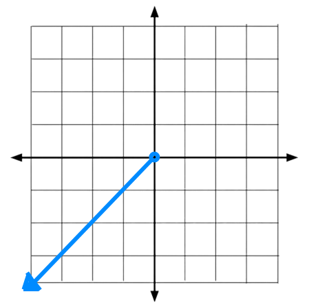
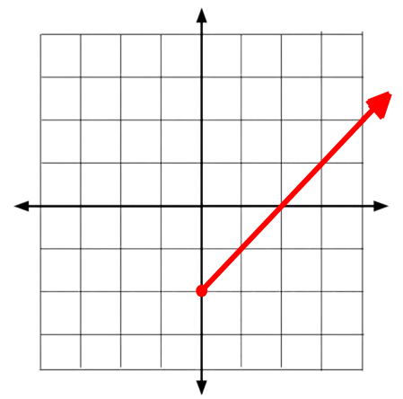

Piecewise Functions
Introduction
Piecewise functions are functions that are broken up into pieces. This can create irregular slopes and lines that a linear line wouldn't normally produce...
 Piecewise functions usually have limitations or greater than or less than statements that create the pieces of a piecewise function. For example...
Piecewise functions usually have limitations or greater than or less than statements that create the pieces of a piecewise function. For example...
This basically tells us that the piecewise function is made out of two seperate function lines. One that's has a slope of 1 and only appears when x is less than 0...

And another with a slope thats also 1, has a y-intercept of -2 and only appears when x is greater than or equal to 0...

So taking these together, we can graph the piecewise functions with both of these lines.
Done? Here are other Links
Back to Main Page
Back to Informational
If you are seeing this, your clock is missing a ding-dong
If you are seeing this, your calender needs a pin or two.